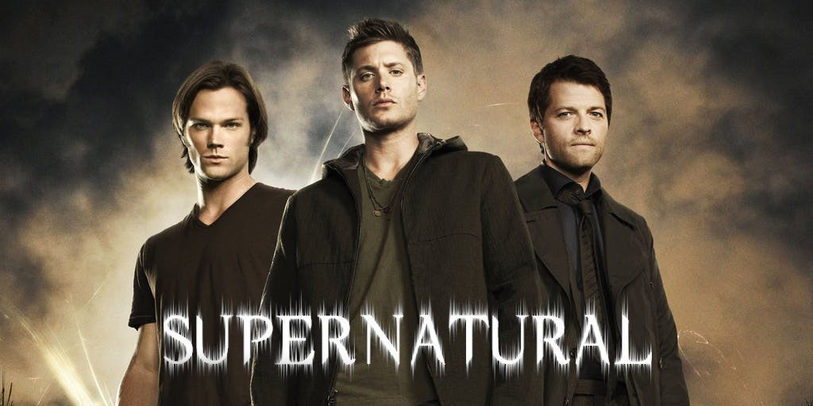
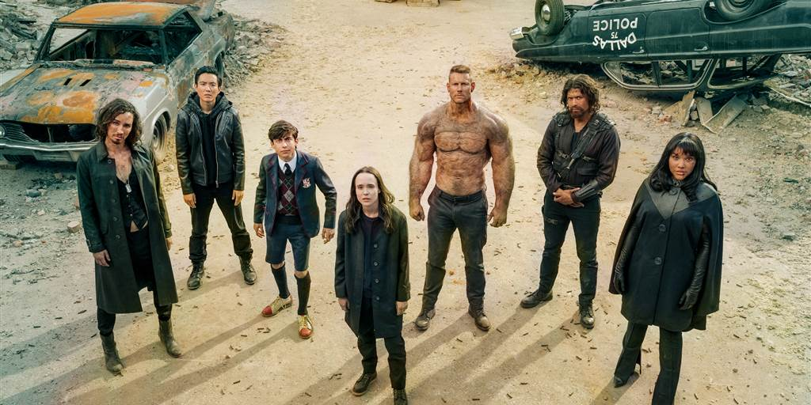
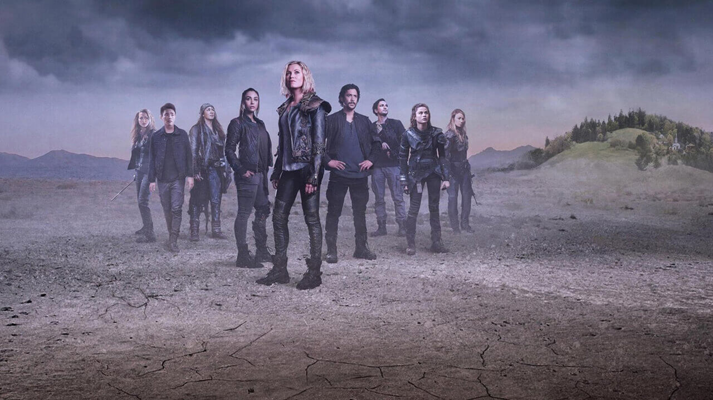
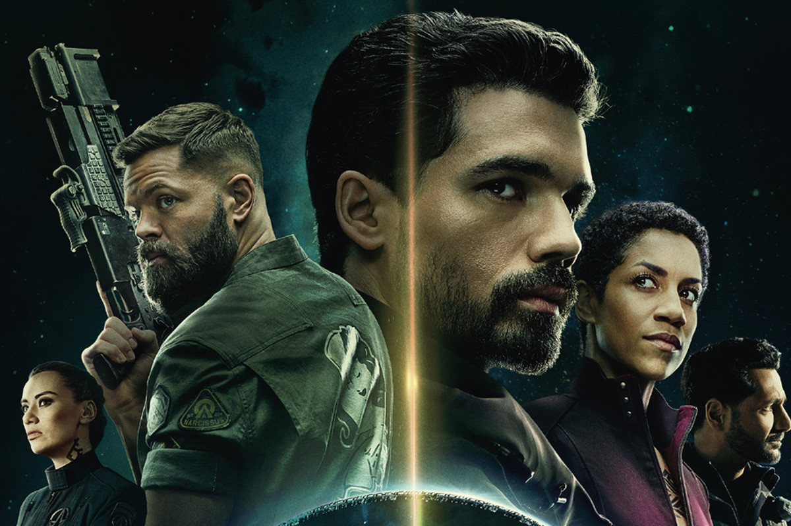
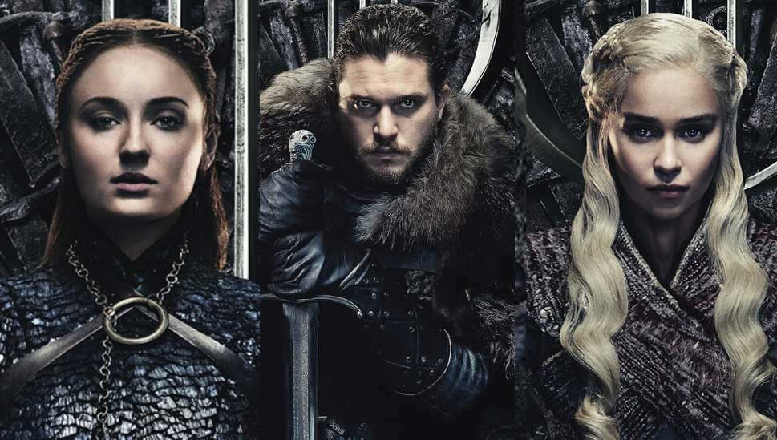

Supernatural
The story follows two brothers (Sam and Dean Winchester) who are out to kill every evil thing in this
world. When Dean was 4 years old and Sam only 6 months old; their mother (Mary) was killed, their
father(John) was determined to find and kill the demon who killed his wife. Raising the boys as "HUNTERS"
of all things evil. Their motto: SAVING PEOPLE, HUNTING THINGS, THE FAMILY BUSINESS.
Going up against demons, vampires, werewolves, shapeshifters, demigods, witches, the four horsemen
and even angels among other things. They lose family and find new people they call family. They have
gone to heaven and hell for each other and will do it all over again. Cause that's what FAMILY does and
"Family don't end with blood".

The Umbrella Academy
Created for Netflix by Steve Blackman and developed by Jeremy Slater, it revolves around a
dysfunctional family of adopted sibling superheroes who reunite to solve the mystery of their father's death
and the threat of an impending apocalypse.

The 100
Ninety-seven years after a devastating nuclear apocalypse wipes out almost all life on Earth,
thousands
of people now live in a space station orbiting Earth, which they call the Ark. Three generations
have
been born in space, bringing the population of the Ark beyond carrying capacity. One-hundred
juvenile
detainees are sent to Earth in a last attempt to determine whether it is habitable. They discover
that
some survived the apocalypse: the grounders, who live in clans locked in a power struggle; the
Reapers,
another group of grounders who have been turned into cannibals by the Mountain Men; and the Mountain
Men, who live in Mount Weather, descended from those who locked themselves away before the
apocalypse.
Under the leadership of Bellamy and Clarke, the juveniles attempt to survive the harsh surface
conditions, battle hostile grounders and establish communication with the Ark.

The Expanse
Set hundreds of years in the future, after mankind has colonized the solar system. A hardened
detective
and a rogue ship's captain come together for what starts as a missing young woman and evolves into a
race across the solar system to expose the greatest conspiracy in human history.

Game of Thrones
In the mythical continent of Westeros, several powerful families fight for control of the Seven
Kingdoms.
As conflict erupts in the kingdoms of men, an ancient enemy rises once again to threaten them all.
Meanwhile, the last heirs of a recently usurped dynasty plot to take back their homeland from across
the
Narrow Sea.

Kingdom
Set in Korea’s medieval Joseon period, it tells the story of Crown Prince Lee Chang (Ju Ji-hoon), who
becomes embroiled in a coup/political conspiracy and is forced to embark upon a mission to
investigate the spread of a mysterious undead plague that has beset the current emperor and the country's
southern provinces.
The story starts with a notice written in Korean on a billboard, claiming the king of
Joseon is dead and the crown prince should be crowned immediately as the new king. However, inside the
palace, the king is known to be severely sick and has been secretly treated for the past 10 days. No one was
allowed to visit the king, not even the crown prince himself. Late at night, the crown prince sneaks
out to visit his father, wanting to know the truth. But instead of his own father, he encountered the
silhouette of a beastly monster. Accompanied by the physician Seo-bi (Bae Doo-na), the enigmatic
Yeong-sin (Kim Sung-kyu), and his personal guard Mu-yeong (Kim Sang-ho), Prince Lee Chang must
prevent the advance of the plague towards his home capital of Hanyang (present-day Seoul) while addressing
the sinister coup masterminded by Minister Cho Hak-ju (Ryu Seung-ryong) and his family aimed towards his
deposition from the throne.